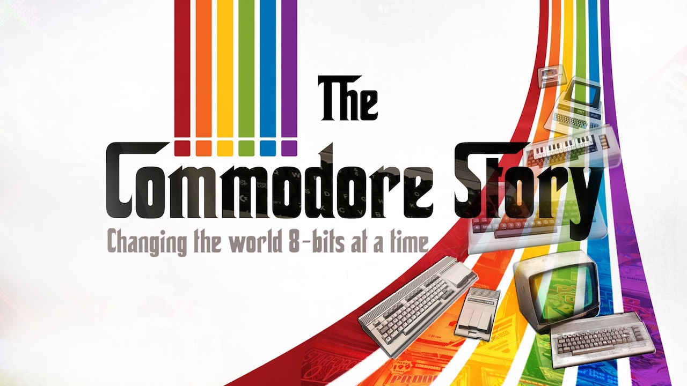
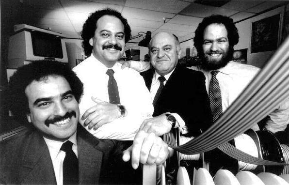
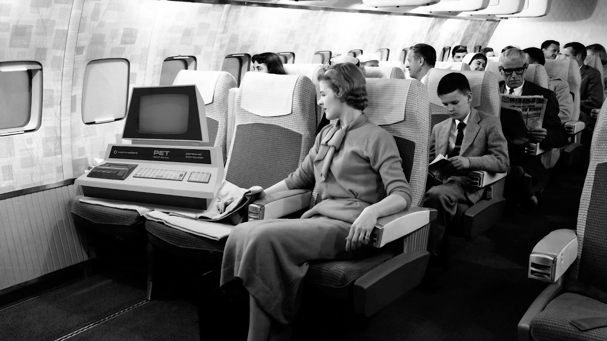
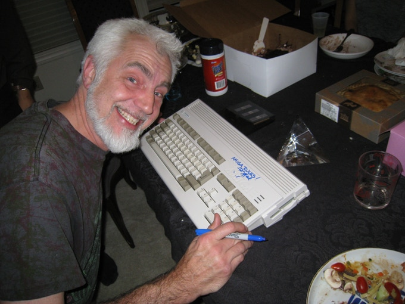

15 kwietnia 2018
Historię firmy Commodore każdy miłośnik elektronicznej rozrywki, przynajmniej z grubsza, zna. Kilka rozdziałów poświęcił jej chociażby nasz redaktor naczelny w swoich "Cyfrowych Marzeniach". Steven Fletcher, reżyser The Commodore Story jest chyba pierwszą osobą, która przedstawiła ją w tak obrazowy i przystępny sposób w postaci filmu dokumentalnego. Sposób realizacji przypomina trochę nasz rodzimy "Thank You For Playing: Kultowe Magazyny o Grach" i składa się z wypowiedzi byłych pracowników firmy, ludzi, którzy tworzyli tę historię, popartych archiwalnymi zdjęciami, sekwencjami filmowymi z dawnych lat oraz kilkoma nieznanymi wcześniej ciekawostkami.

Dokument składa się z trzech części, podobnie jak całą historię firmy można zamknąć w trzech aktach. Porównania do greckiej tragedii użył Bil Herd, wieloletni pracownik Commodore oraz główny projektant C128.
Tematem pierwszego aktu są dzieje firmy zanim zajęła się produkcją komputerów. Reżyser nie ograniczył się tutaj wyłącznie do historii powstania i pierwszych lat działalności Commodore, te są doskonale znane. Ponieważ główną osobą wypowiadającą się w tej części jest jeden z synów założyciela - Leonard Tramiel, gwarantuje nam to sporo mniej powszechnych faktów z życia ojca.

Część druga opisuje wzrost popularności firmy wraz z premierami kolejnych sprzętów. Historię rozpoczyna oczywiście PET, z moim ulubionym zdjęciem - komputera transportowanego jako pasażer na pokładzie samolotu na targi elektroniki w Hanowerze.
Jack Tramiel nie chciał konkurować z Apple, czy IBM. Nie zamierzał podbić rynku maszyną, na którą mogliby pozwolić sobie nieliczni. Wolał być "Volkswagenem branży komputerowej", produkować sprzęt dla ludu, który dzięki przystępnej cenie mógł trafić pod strzechy. Takie podejście bardzo się opłaciło. VIC-20 był pierwszym komputerem, który sprzedał się w liczbie miliona egzemplarzy, zaś C64 przez długie lata dzierży rekord sprzedaży potwierdzony wpisem do "Księgi Rekordów Guinessa". Dopiero ostatnio był w stanie się do niego zbliżyć, a według niektórych źródeł już przegonić, Raspberry Pi.

Ostatnia odsłona tragedii skupia się na obiekcie westchnień większości z nas ze szczenięcych lat. Amiga, mimo iż znacznie tańsza od wyrastających jak grzyby po deszczu klonów IBM PC XT/AT, dalej była sprzętem za równowartość kilku średnich miesięcznych pensji Polaków z okresu przemian ustrojowych.
RJ Mical oraz Ron Nicholson, a więc dwójka inżynierów, którzy pracowali nad pierwszym modelem komputera Amiga (później nazwanym A1000), dzielą się swoimi doświadczeniami z tamtego okresu. Mnie w pamięć szczególnie zapadło przedstawienie Amigi jako dziecka trzech gigantów IT tamtego okresu. Jay Miner i Joe Decuir pracowali w Atari nad konsolą VCS a.k.a. 2600. RJ Mical swój fach zdobywał podpatrując Steve'a Wozniaka i Burrella Smitha podczas tworzenia Apple II i Macintosha. A Commodore naturalnie przejął znajdującą się na skraju egzystencji spółkę zasilając ją odpowiednim zastrzykiem gotówki oraz zespołem inżynierów w końcowej fazie projektu.

The Commodore Story to pozycja obowiązkowa dla wszystkich fanów retro komputerów, każdego, kto wychował się na C64 i na Amidze. Historia firmy przedstawiona jest w bardzo przystępny sposób, bez zanudzania suchymi faktami. Mimo iż dokument trwa ponad dwie godziny, ani trochę się nie dłuży i ogląda się go jednym tchem.
Nie spodziewajcie się jakiś sensacyjnych informacji o produkowanych maszynach. Pojawia się natomiast kilka ciekawostek z dziejów firmy. Chociażby okoliczności odejścia założyciela Jacka Tramiela. Jego syn Leonard jawnie poddaje w wątpliwość powszechnie znaną wersję o tajemniczym spotkaniu zarządu Commodore za zamkniętymi drzwiami, z którego nie pozostała żadna dokumentacja, ani też nawet żadna notatka.
Film, jak na tragedię przystało kończy się bankructwem Commodore. O dalszych losach masy upadłościowej, tj. marek Commodore i Amiga, czy też niesprzedanego sprzętu musimy dowiedzieć się z innych źródeł. Nie miałbym jednak nic przeciwko, by autorzy pokusili się o sequel w tej tematyce.